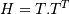
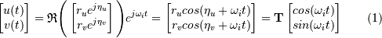
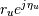
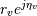
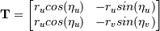
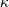
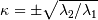
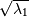
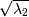
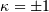

LaviRot.rotor.Rotor(shaft_elements, disk_elements=None, bearing_seal_elements=None, w=0, sparse=True, n_eigen=12, min_w=None, max_w=None, rated_w=None)[source]¶A rotor object.
This class will create a rotor with the shaft, disk and bearing elements provided.
| Parameters: | shaft_elements : list
disk_elements : list
bearing_seal_elements : list
w : float, optional
sparse : bool, optional
n_eigen : int, optional
|
|---|---|
| Returns: | A rotor object. |
Examples
>>> # Rotor without damping with 2 shaft elements 1 disk and 2 bearings
>>> from LaviRot.materials import steel
>>> z = 0
>>> le = 0.25
>>> i_d = 0
>>> o_d = 0.05
>>> tim0 = ShaftElement(le, i_d, o_d, steel,
... shear_effects=True,
... rotary_inertia=True,
... gyroscopic=True)
>>> tim1 = ShaftElement(le, i_d, o_d, steel,
... shear_effects=True,
... rotary_inertia=True,
... gyroscopic=True)
>>> shaft_elm = [tim0, tim1]
>>> disk0 = DiskElement(1, steel, 0.07, 0.05, 0.28)
>>> stf = 1e6
>>> bearing0 = BearingElement(0, kxx=stf, cxx=0)
>>> bearing1 = BearingElement(2, kxx=stf, cxx=0)
>>> rotor = Rotor(shaft_elm, [disk0], [bearing0, bearing1])
>>> rotor.wd[0]
215.3707...
Attributes
| evalues | (array) Rotor’s eigenvalues. |
| evectors | (array) Rotor’s eigenvectors. |
| wn | (array) Rotor’s natural frequencies in rad/s. |
| wd | (array) Rotor’s damped natural frequencies in rad/s. |
Methods
A([w]) |
State space matrix for an instance of a rotor. |
C([w]) |
Damping matrix for an instance of a rotor. |
G() |
Gyroscopic matrix for an instance of a rotor. |
H_kappa(node, w[, return_T]) |
Calculates the H matrix for a given node and natural frequency. |
K([w]) |
Stiffness matrix for an instance of a rotor. |
M() |
Mass matrix for an instance of a rotor. |
campbell(speed_rad[, freqs, mult, plot, ax]) |
Calculates the Campbell diagram. |
freq_response([omega, modes]) |
Frequency response for a mdof system. |
kappa(node, w[, wd]) |
Calculates kappa for a given node and natural frequency. |
kappa_mode(w) |
This function evaluates kappa given the index of the natural frequency of interest. |
orbit() |
|
plot_level1([n, stiffness_range, num, ax]) |
Plot level 1 stability analysis. |
plot_rotor([nodes, ax]) |
Plots a rotor object. |
plot_time_response(F, t, dof[, ax]) |
Plot the time response. |
plot_ucs([stiffness_range, num, ax]) |
Plot undamped critical speed map. |
save_mat(file_name) |
Save matrices and rotor model to a .mat file. |
time_response(F, t[, ic]) |
Time response for a rotor. |
whirl_direction() |
Get the whirl direction for each frequency. |
A(w=None)[source]¶State space matrix for an instance of a rotor.
| Returns: | State space matrix for the rotor. |
|---|
Examples
>>> rotor = rotor_example()
>>> np.round(rotor.A()[50:56, :2])
array([[ 0., 11110.],
[-11106., -0.],
[ -169., -0.],
[ -0., -169.],
[ -0., 10511.],
[-10507., -0.]])
C(w=None)[source]¶Damping matrix for an instance of a rotor.
| Returns: | Damping matrix for the rotor. |
|---|
Examples
>>> rotor = rotor_example()
>>> rotor.C()[:4, :4]
array([[ 0., 0., 0., 0.],
[ 0., 0., 0., 0.],
[ 0., 0., 0., 0.],
[ 0., 0., 0., 0.]])
G()[source]¶Gyroscopic matrix for an instance of a rotor.
| Returns: | Gyroscopic matrix for the rotor. |
|---|
Examples
>>> rotor = rotor_example()
>>> rotor.G()[:4, :4]
array([[ 0. , 0.01943344, -0.00022681, 0. ],
[-0.01943344, 0. , 0. , -0.00022681],
[ 0.00022681, 0. , 0. , 0.0001524 ],
[ 0. , 0.00022681, -0.0001524 , 0. ]])
H_kappa(node, w, return_T=False)[source]¶Calculates the H matrix for a given node and natural frequency.
The matrix H contains information about the whirl direction, the orbit minor and major axis and the orbit inclination. The matrix is calculated by  where the matrix T is constructed using the eigenvector corresponding to the natural frequency of interest:

Where  e  are the elements of the ith eigenvector, corresponding to the node and natural frequency of interest (mode).

| Parameters: | node: int
w: int
return_T: bool, optional
|
|---|---|
| Returns: | H: array
Tdic: dict
|
Examples
>>> rotor = rotor_example()
>>> # H matrix for the 0th node
>>> rotor.H_kappa(0, 0)
array([[ 8.78547006e-30, -4.30647963e-18],
[ -4.30647963e-18, 2.11429917e-06]])
K(w=None)[source]¶Stiffness matrix for an instance of a rotor.
| Returns: | Stiffness matrix for the rotor. |
|---|
Examples
>>> rotor = rotor_example()
>>> np.round(rotor.K()[:4, :4]/1e6)
array([[ 47., 0., 0., 6.],
[ 0., 46., -6., 0.],
[ 0., -6., 1., 0.],
[ 6., 0., 0., 1.]])
M()[source]¶Mass matrix for an instance of a rotor.
| Returns: | Mass matrix for the rotor. |
|---|
Examples
>>> rotor = rotor_example()
>>> rotor.M()[:4, :4]
array([[ 1.42050794, 0. , 0. , 0.04931719],
[ 0. , 1.42050794, -0.04931719, 0. ],
[ 0. , -0.04931719, 0.00231392, 0. ],
[ 0.04931719, 0. , 0. , 0.00231392]])
campbell(speed_rad, freqs=6, mult=[1], plot=True, ax=None)[source]¶Calculates the Campbell diagram.
This function will calculate the damped natural frequencies for a speed range.
| Parameters: | speed_rad: array
freqs: int, optional
mult: list, optional
plot: bool, optional
ax : matplotlib axes, optional
|
|---|---|
| Returns: | points: array
ax : matplotlib axes
|
Examples
>>> rotor1 = rotor_example()
>>> speed = np.linspace(0, 400, 101)
>>> camp = rotor1.campbell(speed, plot=False)
>>> np.round(camp[:, 0], 1) # damped natural frequencies at the first rotor speed (0 rad/s)
array([ 82.7, 86.7, 254.5, 274.3, 679.5, 716.8])
>>> np.round(camp[:, 10], 1) # damped natural frequencies at 40 rad/s
array([ 82.6, 86.7, 254.3, 274.5, 676.5, 719.7])
freq_response(omega=None, modes=None)[source]¶Frequency response for a mdof system.
This method returns the frequency response for a mdof system given a range of frequencies and the modes that will be used.
| Parameters: | omega : array, optional
modes : list, optional
|
|---|---|
| Returns: | omega : array
magdb : array
phase : array
|
kappa(node, w, wd=True)[source]¶Calculates kappa for a given node and natural frequency.
w is the the index of the natural frequency of interest. The function calculates the orbit parameter :

Where  is the length of the semiminor axes and  is the length of the semimajor axes.
If , the orbit is circular.
If is positive we have a forward rotating orbit and if it is negative we have a backward rotating orbit.
| Parameters: | node: int
w: int
wd: bool
|
|---|---|
| Returns: | kappa: dict
|
Examples
>>> rotor = rotor_example()
>>> # kappa for each node of the first natural frequency
>>> # Major axes for node 0 and natural frequency (mode) 0.
>>> rotor.kappa(0, 0)['Major axes']
0.00145...
>>> # kappa for node 2 and natural frequency (mode) 3.
>>> rotor.kappa(2, 3)['kappa']
8.539...e-14
kappa_mode(w)[source]¶This function evaluates kappa given the index of the natural frequency of interest. Values of kappa are evaluated for each node of the corresponding frequency mode.
| Parameters: | w: int
|
|---|---|
| Returns: | kappa_mode: list
|
Examples
>>> rotor = rotor_example()
>>> # kappa for each node of the first natural frequency
>>> rotor.kappa_mode(0)
[-0.0, -0.0, -0.0, -0.0, -1.153...e-08, -0.0, -1.239...e-08]
plot_level1(n=None, stiffness_range=None, num=5, ax=None, **kwargs)[source]¶Plot level 1 stability analysis.
This method will plot the stability 1 analysis for a given stiffness range.
| Parameters: | stiffness_range : tuple, optional
num : int
ax : matplotlib axes, optional
|
|---|---|
| Returns: | ax : matplotlib axes
|
plot_rotor(nodes=1, ax=None)[source]¶Plots a rotor object.
This function will take a rotor object and plot its shaft, disks and bearing elements
| Parameters: | nodes : int, optional
ax : matplotlib axes, optional
|
|---|---|
| Returns: | ax : matplotlib axes
Examples: |
plot_time_response(F, t, dof, ax=None)[source]¶Plot the time response.
This function will take a rotor object and plot its time response given a force and a time.
| Parameters: | F : array
t : array
dof : int
ax : matplotlib axes, optional
|
|---|---|
| Returns: | ax : matplotlib axes
|
plot_ucs(stiffness_range=None, num=20, ax=None)[source]¶Plot undamped critical speed map.
This method will plot the undamped critical speed map for a given range of stiffness values. If the range is not provided, the bearing stiffness at rated speed will be used to create a range.
| Parameters: | stiffness_range : tuple, optional
num : int
ax : matplotlib axes, optional
|
|---|---|
| Returns: | ax : matplotlib axes
|
time_response(F, t, ic=None)[source]¶Time response for a rotor.
This method returns the time response for a rotor given a force, time and initial conditions.
| Parameters: | F : array
t : array
ic : array, optional
|
|---|---|
| Returns: | t : array
yout : array
xout : array
|